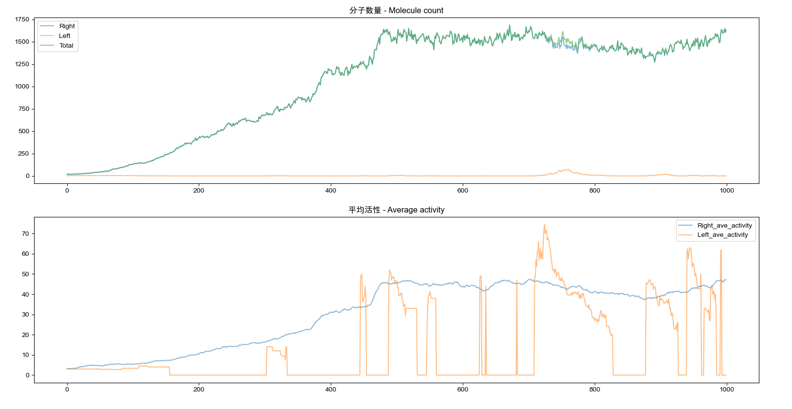

模拟实验：自然界中手性偏好的起源 - Simulation Experiment：The Origin of Chiral Preference in Nature
自然界中的手性偏好可能源于自催化分子手性与活性突变的不均衡。出于好奇，我们通过模拟自催化分子的演化过程，考察了手性在时间演变中的分布变化。
The chiral preference observed in nature may stem from an imbalance between the self-catalytic chirality of molecules and active mutations. Out of curiosity, we simulated the evolutionary process of self-catalytic molecules to explore how chirality evolves over time.
起初，系统中分子具有随机的手性和活性，随着时间的推移，他们会自催化繁殖和死亡。繁殖时，分子的手性保持不变，活性则可能略有波动。
在模拟中，分子数量经历了“爆炸式”指数增长后逐渐趋于稳定。左旋和右旋分子在指数增长初期存在微小的活性差异，在增长过程中，这种差异被持续放大，导致一种手性分子的数量与平均活性总是高于另一种手性。
在指数增长后期，随着环境承载能力开始限制总数量并提升死亡率，手性数量差距会进一步加剧，最终可能使其中一种手性完全消失。
Initially, the system contained molecules with random chirality and activity. Over time, they would self-catalyze reproduction and death. During reproduction, the chirality of molecules remained unchanged, while their activity could slightly fluctuate.
In the simulation, the number of molecules experienced an "explosive" exponential growth before stabilizing. Left-handed and right-handed molecules had minor differences in activity at the start of the exponential growth phase, but this difference was continuously amplified throughout the process, leading to one chiral type keeping having a higher population and average activity than the other.
In the later stages of exponential growth, as the environment's carrying capacity began to limit the total number and increase the death rate, the disparity in chiral populations intensified, ultimately causing one chiral type to potentially disappear completely.
若在繁殖过程中允许发生极低概率的手性反转，则会出现优势群体（一种手性的分子）与小群体（另一种手性的分子）竞争的情形。通常，小群体因为数量少、在选择压力下难以维持而迅速灭绝；但在极端情况下，小群体也可能取代优势群体并实现整体系统的手性反转。
If a very low probability of chirality inversion is allowed during reproduction, a competitive scenario emerges between a dominant population (one chiral type) and a small population (the other chiral type). Typically, the small population, due to its low numbers and inability to sustain under selective pressure, would quickly go extinct. However, in extreme cases, the small population might replace the dominant one, resulting in a complete chiral reversal of the system.
本实验具有化学和生物学研究意义。我们的模拟结果表明，手性偏好有可能在自催化体系中自发出现，并不需要外部因素。
This experiment holds significance for both chemical and biological research. Our simulation results suggest that chiral preference may spontaneously emerge in self-catalytic systems without the need for external factors.

代码 - Code
1 | import random |